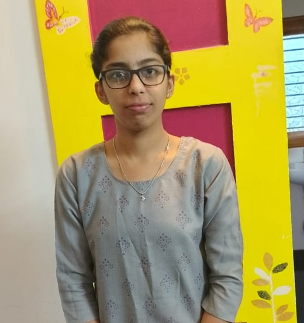

MERN Stack Developer | Passionate about Building Web Applications
I am Sri Karthika, an enthusiastic MERN stack web developer with a strong passion for building dynamic and responsive web applications. With expertise in MongoDB, Express.js, React.js, and Node.js, I am eager to contribute my skills to create innovative solutions. As a fresh graduate, I am excited to apply my knowledge in real-world projects and learn from experienced professionals. I am actively seeking opportunities to grow and make an impact in the field of website development.
This platform serves as a bridge for collaboration between NGOs and orphanages, enabling seamless communication and resource sharing. It allows NGOs to manage donations, track projects, and connect with orphanages in need. Built with user-friendliness in mind, the website supports volunteer sign-ups and donation tracking. By enhancing transparency and efficiency, it aims to make a real impact on the lives of children and families in need.